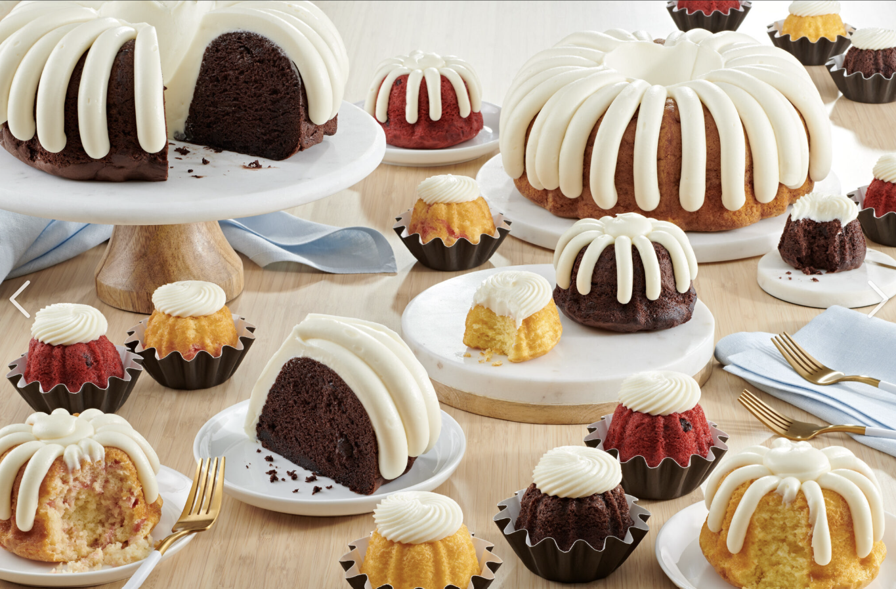
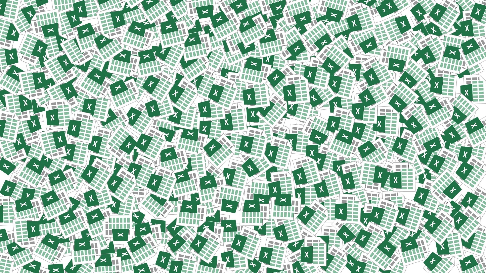

About me
Hello! My name is Olivia Gibbs. I am a student at MSU Denver. I am studying for a Bachelor of Science in Cybersecurity. Alongside my degree I am studying two minors, one in Computer Security, and one in Criminal Justice. I am interested in cybercrime, digital forensics, and aiming to find a career in those areas.
Job Experience
As a Baking Assistant, I support daily production by preparing pans, scooping batter, monitoring bake quality, flipping and cooling cakes, and packaging and organizing finished products, all while following strict food safety standards. One day a week I also work as a Joy Creator, serving customers at the front, handling transactions, handing out orders, guiding customers through new orders, and answering the phone.
| Skill | Why it Matters in Cybersecurity |
|---|---|
| Customer Communication | Analysts explain incidents clearly to non-technical users and leadership. |
| Secure Payment Handling | Protecting payment data is central to standards like PCI DSS. |
| Attention to Detail | One small detail can separate a false alarm from a real attack. |
| Compliance and Procedure | Security runs on frameworks and playbooks where every step matters. |
| Working Under Pressure | SOC analysts have to respond to high-priority alerts quickly and calmly. |
| Problem Resolution | Incident response means solving problems while stakeholders are stressed. |
| Teamwork | Smooth handoffs between team members are critical during an active incident. |

As a Design Assistant, my main responsibility was building the spreadsheets that supported each new fabric collection. For every collection, I photographed and edited product images along with creating four spreadsheets, each with its own purpose and attributes.
- Sheet One: SKU numbers, design names, design numbers, color numbers, matching factory reference numbers, and photos of each sample.
- Sheet Two: Stacking order, display numbers, positions, dimensions, yardage, and cost, with calculated totals and photos of each finished display.
- Sheet Three: Mill, collection, design and color details, fabric type and width, fabrication, release, bolt size, origin, designer, royalty, pricing, and bundle product codes.
- Sheet Four: The order of every SKU within each fabric bundle, sorted into color groupings.
Together, these kept information for dozens of SKUs per collection accurate, consistent, and ready for production. I worked diligently to meet deadlines and used the Microsoft Office Suite and Adobe software every day.
| Skill | Why It Matters in Cybersecurity |
|---|---|
| Data Management | Security relies on organized records. |
| Cross-Referencing | Analysts track IP addresses and usernames across multiple log sources. |
| Data Mapping | Normalizing data between systems, like feeding logs into a SIEM, uses the same skill. |
| Formulas and Calculations | Spreadsheet logic is a steppingstone to query languages and scripting. |
| Categorization | Analysts classify alerts by type and severity to prioritize response. |
| Sequencing | Forensic investigators build precise timelines of events. |
| Evidence Documentation | Every photo and record must be tied to the right case. |
| Quality Review | Forensic reports must be accurate enough to hold up in legal proceedings. |

Activities
I played trombone in Symphonic Band and pep band, and synthesizer in the marching band's front ensemble. During marching season, I committed 15 to 20 hours a week to rehearsals, football games, and competitions. We competed at the Colorado Bandmasters Association (CBA) State Championships both seasons. Our band placed 7th of 14 in the Class 5A quarterfinals in 2021 and 8th of 14 in the Class 4A quarterfinals in 2022. My synthesizer cart served as the hub for the front ensemble's electronics, so I was responsible for setting up and connecting everything before every performance. My favorite show was Moonlight's Curse. In Symphonic Band, I challenged for second chair and moved up, and our band earned high ratings at festivals. After two marching seasons, I moved to tech theater to focus on the technical side of live performances.
| Skill | Why It Matters in Cybersecurity |
|---|---|
| Equipment Setup and Connections | Setting up the central hub for a group's electronics is similar to managing network connections, where one missed detail can take everything down. |
| Memorization and Precision | Analysts need commands, ports, and attack patterns memorized so they can act without stopping to look them up. |
| Performing Under Pressure | Staying focused during a judged competition is like staying calm during a live incident. |
| Adaptability | Switching between two instruments shows I can learn new tools quickly in a field that changes constantly. |
| Taking Initiative | Challenging for a higher chair is like earning certifications to move up in a security team. |
| Teamwork and Timing | A band only works when every section plays its part at the right moment, just like an incident response team. |
Contact Me
There are three emails you can use to contact me:
- Contact One: Personal Email
- Contact Two: Industry Email
- Contact Three: Academic Email
Please use the email that is most appropriate for your needs. I will respond to all emails as soon as possible.